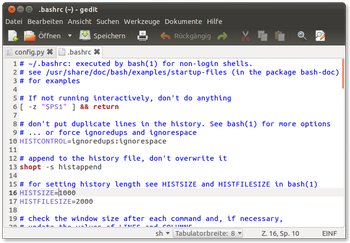
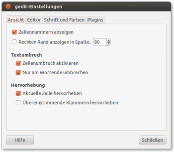
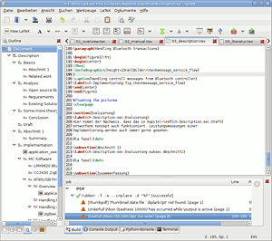

gedit
Dieser Artikel wurde für die folgenden Ubuntu-Versionen getestet:
Ubuntu 16.04 Xenial Xerus
Ubuntu 14.04 Trusty Tahr
Zum Verständnis dieses Artikels sind folgende Seiten hilfreich:
 Gedit
Gedit  - der GNOME-Editor - ist der Standard-Texteditor in der GNOME-Desktopumgebung und damit auch bei Ubuntu und ist als solcher auf den GNOME- und GTK-Bibliotheken aufgebaut.
- der GNOME-Editor - ist der Standard-Texteditor in der GNOME-Desktopumgebung und damit auch bei Ubuntu und ist als solcher auf den GNOME- und GTK-Bibliotheken aufgebaut.
Der Editor beherrscht unter anderem Syntaxhervorhebung für: C, C++, CSS, HTML, Java, Perl, PHP, Python und eine Vielzahl weiterer Programmier- und Skriptsprachen. Zusätzlich ist gedit durch Plugins erweiterbar. So kann man die Sitzung ("session") speichern und laden, Klammern automatisch schließen oder ganze Textblöcke ein- bzw. auskommentieren usw.
Eine Abspaltung (Fork) ist Pluma , der Standardeditor des Desktop-Umgebung MATE. Als Grundlage diente eine ältere Version von gedit.
Installation¶
gedit wird bei der Installation von Ubuntu automatisch installiert. Sollte man eine andere Desktop-Umgebung oder eine Minimalinstallation nutzen, so kann man das Programm über das folgende Paket nachinstallieren [1]:
gedit
 mit apturl
mit apturl
Paketliste zum Kopieren:
sudo apt-get install gedit
sudo aptitude install gedit
Benutzung¶

Gedit kann bei Ubuntu-Varianten mit einem Anwendungsmenü via "Zubehör → Texteditor" gestartet werden [2]. Alternativ verwendet man den Befehl gedit.
In der Menüleiste sind alle Befehle zum Arbeiten zu finden, wobei auch die jeweiligen Tastenkürzel angegeben sind. Die grundlegenden Aktionen zur Erstellung, Sicherung und Ausgabe einer Datei finden sich im ersten Menüpunkt "Datei", über den auch die zuletzt geöffneten Dateien aufgerufen werden können.
Grundlegende Befehle zur Bearbeitung von Datei und Einstellungen befinden sich im Menü "Bearbeiten". Über den Eintrag "Suchen" gelangt man unter anderem zur hilfreichen Funktion "Ersetzen...", womit nicht nur einzelne Wörter im Text ersetzt werden können, sondern auch ganze Textpassagen.
Reiter¶
Zum Bearbeiten können eine oder mehrere Dateien geöffnet werden. Diese werden im Fenster angezeigt, und für jede geöffnete Datei wird eine Registerkarte (auch Reiter genannt) angelegt.
Mit Alt + 1 bis Alt + 9 oder durch Anklicken kann zwischen den Reitern gewechselt werden.
Mit ⇧ + Strg + L oder über das Menü "Dokumente" können alle geöffneten Dateien auf einmal gespeichert werden.
Syntaxhervorhebung¶
Durch die Syntaxhervorhebung werden die wichtigsten Regeln für die jeweilige Programmiersprache hervorgehoben. Um es zu aktivieren, muss man entweder die neue Datei mit der entsprechenden Endung speichern oder aber über "Ansicht → Hervorhebungsmodus" aktivieren. Führt man einen  -klick im Textfenster aus, so öffnet sich ein weiteres Menü.
-klick im Textfenster aus, so öffnet sich ein weiteres Menü.
Zusätzlich zu den vorhandenen Syntaxhervorhebungen kann man weitere Syntaxdefinitionen im Internet finden oder selbst erstellen. Bei diesen Dateien handelt es sich um einfache XML-Dateien mit der Dateiendung .lang. Diese kopiert man in die Verzeichnisse ~/.local/share/gtksourceview-3.0/language-specs oder für alle Nutzer nach /usr/share/gtksourceview-3.0/language-specs. Nach einem Neustart des Editors kann man sie nutzen.
Konfiguration¶
 Um in den vollen Genuss aller Erweiterungen zu kommen, können noch einige Einstellungen vorgenommen werden: "Bearbeiten → Einstellungen" öffnet ein neues Fenster. Hier können weitere Änderungen vorgenommen werden. Folgende Optionen stehen zur Verfügung:
"Ansicht" - Zeilennummern anzeigen, Rechten Rand anzeigen, Textumbruch, Aktuelle Zeile hervorheben und übereinstimmende Klammern anzeigen.
"Editor" - Tabulator (Breite ändern/Leerzeichen), Automatischer Einzug und automatische Sicherungskopie (speichert die geöffnete Datei automatisch ab in einer separaten Datei, die im selben Ordner angelegt wird)
"Schrift und Farben" - Schrift und Farbe an die eigenen Bedürfnisse anpassen
"Plugins" - (de)aktivieren von Erweiterungen
Erweiterungen¶
Die Möglichkeiten von gedit können durch das Aktivieren zusätzlicher Plugins stark erweitert werden. Unter "Bearbeiten → Einstellungen → Plugins" können diese Erweiterungen aktiviert werden. Dort findet man auch die Möglichkeit, Plugins zu konfigurieren, falls das entsprechende Plugin Einstellungsmöglichkeiten bietet.
Erweiterungen der gedit-Entwickler¶
Folgende Plugins werden zusammen mit gedit installiert und sind daher immer vorhanden:
Dateiverwaltungsleiste: Leichter Dateizugriff über die Seitenleiste
Externe Werkzeuge: Externe Befehle und Shell-Skripte ausführen
Floskelliste: Häufig verwendete Floskeln und Zeichenketten einfügen
Groß-/Kleinschreibung verändern: Die Groß-/Kleinschreibung des markierten Texts ändern
Modelines: Emacs-, Kate- und Vim-Modelines unterstützen
Python-Konsole: Eine interaktive Python-Konsole in der Fußleiste öffnen
Rechtschreibprüfung: Eine Rechtschreibprüfung im momentan geöffneten Dokument durchführen
Schnelles Öffnen: Dateien schnell öffnen
Schnipsel: Oft genutzte Textpassagen auf schnellem Weg einfügen
Sortieren: Ein Dokument oder den markierten Text sortieren
Statistik zum Dokument: Anzahl der Wörter, Zeilen, Zeichen sowie Nicht-Leerzeichen anzeigen
Datum/Uhrzeit einfügen: Das heutige Datum und die aktuelle Uhrzeit an der Zeigerposition einfügen
Nach der Installation [1] von
gedit-plugins (universe)
mit apturl
Paketliste zum Kopieren:
sudo apt-get install gedit-plugins
sudo aptitude install gedit-plugins
und einem Neustart von gedit können weitere Plugins aktiviert werden:
Commander: Befehlszeilenschnittstelle für erweiterte Bearbeitung
Eingebettetes Terminal: Terminal in die untere Leiste einbetten
Farbwähler: Eine Farbe aus einem Dialog wählen und deren Hexadezimal-Darstellung einfügen
Intelligente Leertasten: Vergessen Sie, dass Sie keine Einzüge benutzen
Klammern schließen: Fügt automatisch schließende Klammern hinzu
Leerzeichen anzeigen: Leerzeichen und Einzüge anzeigen
Lesezeichen: Einfache Navigation im Dokument mittels Lesezeichen
Mehrfachbearbeitung: Dokument an mehreren Stellen gleichzeitig bearbeiten
Quelltextkommentar: Einen markierten Quelltextabsatz auskommentieren oder wieder unkommentieren
Reiterleiste anzeigen/verbergen: Fügt einen Menüeintrag hinzu, um die Reiterleiste anzuzeigen bzw.zu verbergen
Sitzungsspeicherung: Sitzung speichern und wiederherstellen
Wortvervollständigung: Wortvervollständigung mit Hilfe des Vervollständigungs-Frameworks
Zeichentabelle: Sonderzeichen durch Anklicken einfügen
Zeilen zusammenfügen/umbrechen: Mehrere Zeilen zusammenfügen oder lange Zeilen umbrechen
Andere Erweiterungen¶
Da gedit 3 ein neues Plugin-System besitzt, funktionieren Plugins, die für gedit 2 (in früheren Ubuntuversionen) geschrieben wurden, nicht mehr. Außerdem verwendet Gedit seit Version 3.10 (Ubuntu 14.04) Python 3 - daher sind ältere in Python (2) geschriebene Plugins nicht mehr komptibel. Einen Überblick über verfügbare externe Plugins erhält man unter Gedit Plugins für die Versionen 3.8 und 3.10 (für Ubuntu 14.04).
Diese Plugins werden meistens manuell installiert, einige sind aber auch als Ubuntu-Pakete über die Paketverwaltung oder über PPAs verfügbar. Zur manuellen Installation wird das Plugin entpackt [2] und in das Plugin-Verzeichnis kopiert:
Installation im Benutzerverzeichnis
~/.local/share/gedit/plugins/ (gedit 3)
Systemweite Installation
/usr/lib/gedit/plugins/ (gedit 3)
Nach einem Neustart von gedit ist das Plugin unter "Bearbeiten → Einstellungen → Plugins" verfügbar.
Imitation¶
Imitation ist eine Erweiterung zum gleichzeitigen Editieren mehrerer Textabschnitte und unter Umständen nicht nur für Programmierer eine willkommene Hilfe. Details sind dem separaten Artikel zu entnehmen.
LaTeX¶

Für gedit gibt es ein leistungsfähiges LaTeX-Plugin , das eine Strukturübersicht über das LaTeX-Dokument, Autovervollständigung, das Erzeugen von PDF-Dateien und einiges mehr ermöglicht. Für das Erstellen der Ausgabedateien setzt das Plugin auf Rubber (rubber) auf.
Installation¶
Das LaTeX-Plugin kann man über das folgende Paket installieren:
gedit-latex-plugin (universe)
mit apturl
Paketliste zum Kopieren:
sudo apt-get install gedit-latex-plugin
sudo aptitude install gedit-latex-plugin
Nach einem Neustart von gedit kann das Plugin über "Bearbeiten → Einstellungen → Plugins" aktiviert werden. In manchen Fällen konnte erst nach einem Neustart des Systems das Plugin aktiviert werden. Sollte es Probleme geben, etwa dass das Latex-Plugin erscheint, sich aber nicht aktivieren lässt, so könnte es helfen, die Plugin-Daten einer manuellen Installation zu löschen.
Manuelle Installation für gedit 3¶
Zuerst müssen die benötigten Abhängigkeiten installiert werden:
build-essential
autopoint
intltool
libtool
libgtk-3-dev
mit apturl
Paketliste zum Kopieren:
sudo apt-get install build-essential autopoint intltool libtool libgtk-3-dev
sudo aptitude install build-essential autopoint intltool libtool libgtk-3-dev
In das Verzeichnis wechseln, in das der mit Git verwaltete Quellcode geklont werden soll.
Klonen des Quellcodes vom Netz mit
git clone http://git.gnome.org/browse/gedit-latex
Nun in das eben heruntergeladene Verzeichnis gedit-latex wechseln und
./autogen.sh
ausführen.
Danach wie gewohnt:
./configure make sudo make install
Eine Prefixangabe für configure ist nicht nötig, da bei der git-Version ab Ubuntu 11.10 die neue Struktur der Verzeichnisse bereits korrekt "eingebaut" ist.
Danach wie üblich auf "Bearbeiten → Einstellungen" das Latex-Plugin aktivieren, und fertig.
Externe Werkzeuge¶
Mit dem Plugin "Externe Werkzeuge" kann man beliebige Kommandos oder Programme von gedit aus starten. Man kann so mit externen Programmen auf einfache Weise den Inhalt des aktiven Dokuments ändern oder sich die Ausgabe in der Fußleiste anzeigen. Die Werkzeuge kann man über "Werkzeuge → Externe Werkzeuge" oder Tastaturkürzel starten. Eine Sammlung von Beispielen findet man auch im gedit-Wiki . Erklärungen zu den möglichen Parametern, die gedit bereitstellt, werden in der Dokumentation zum "Externe Werkzeuge" Plugin aufgelistet.
Inyoka¶
gedit-inyoka ist ein Hilfsmittel für das Wiki von ubuntuusers. Es bietet Syntax-Hervorhebung, Code-Schnipsel und einen "class browser", der das Inhaltsverzeichnis abbildet. Der Vorteil ist, dass man so das Wiki auch offline bearbeiten kann.
Versteckte Einstellungen¶
Eine Reihe von Einstellungen für Gedit sind versteckt. Diese lassen sich von der Kommandozeile mit dem Befehl gsettings oder grafisch mit dem dconf-Editor unter dem Pfad org → gnome → gedit → preferences auslesen und bearbeiten.
Für unter root per gksudo wirksame Einstellungen muss man den Kommandos sudo -H voranstellen.
Anzahl der zuletzt geöffneten Dateien¶
Manchmal wird man sich daran stören, dass die Liste der zuletzt geöffneten Dateien nur 5 Einträge hat. Dies kann jedoch mit der folgenden Einstellung geändert werden:
gsettings set org.gnome.gedit.preferences.ui max-recents 10
Die Liste der zuletzt geöffneten Dateien ist dann entsprechend länger. Evtl. muss gedit neu gestartet werden.
Automatisches Zeilenende EOL verhindern¶
Manchmal wird man sich daran stören, dass Gedit am Ende einer Datei immer automatisch ein Zeilenende EOL anfügt, und dieses außerdem im Textfenster nicht anzeigt. Dies kann man mit der folgenden Einstellung abschalten:
gsettings set org.gnome.gedit.preferences.editor.ensure-trailing-newline false
Tastenkürzel¶
Alle Funktionen der Tastenkürzel lassen sich über das Menü aufrufen und sind dort auch aufgeführt. Es sind meist Standard-Tastenkürzel, die in vielen Programmen zum Einsatz kommen, und es ist hilfreich, sie zu kennen, aber eine Gewöhnungssache, sie auch zu nutzen. Weitere Tastenkürzel und Funktionen, für die kein Tastenkürzel vergeben ist, finden sich ebenfalls im Menü.
| Grundlegende Tastenkürzel | |
| Tastenkürzel | Funktion |
| Strg + N | Eine neue Datei erstellen |
| Strg + O | Eine vorhandene Datei öffnen |
| Strg + S | Die geöffnete Datei speichern |
| ⇧ + Strg + S | Unter anderem Namen oder in anderem Dateiformat speichern |
| ⇧ + Strg + P | Die Druckvorschau anzeigen |
| Strg + P | Die geöffnete Datei drucken |
| F1 | Hilfe |
| F7 | Rechtschreibprüfung |
| F9 | Die Seitenleiste anzeigen/verbergen |
| Strg + F9 | Die Fußleiste anzeigen/verbergen |
| Strg + W | Die Datei schließen |
| Strg + Q | Das Programm beenden |
Links¶
Webeditoren unter Ubuntu/Linux Teil 2: gedit
 - Blogbeitrag, 05/2009
- Blogbeitrag, 05/2009Customizing gedit as a Web Developer’s IDE
- Blogbeitrag, 09/2007Editoren
 Programmübersicht
Programmübersicht
- Erstellt mit Inyoka
-
 2004 – 2017 ubuntuusers.de • Einige Rechte vorbehalten
2004 – 2017 ubuntuusers.de • Einige Rechte vorbehalten
Lizenz • Kontakt • Datenschutz • Impressum • Serverstatus -
Serverhousing gespendet von